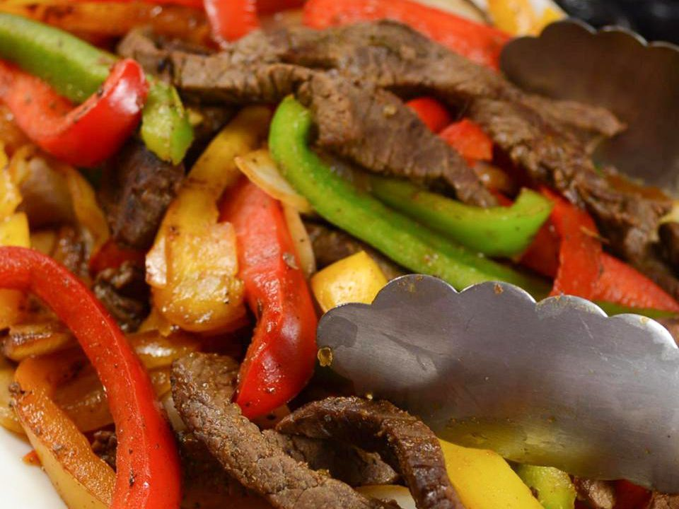

Fajitas

What are fajitas?
Fajitas are a popular Tex-Mex dish made from grilled meat, usually beef or chicken, which is served on a sizzling hot skillet along with grilled onions and peppers. The meat and vegetables are served with warm tortillas, guacamole, sour cream, and salsa, allowing diners to create their own unique flavor combinations.
Ingredients
- 2 teaspoons seasoned salt
- ¼ teaspoon garlic salt
- ½ teaspoon black pepper
- ½ teaspoon cayenne pepper
- 1 teaspoon dried oregano
- 1 ½ pounds venison, cut into 2 inch strips
- 4 tablespoons vegetable oil
- 1 medium red bell pepper, cut into 2 inch strips
- 1 medium yellow bell pepper, cut into 2 inch strips
- 1 medium onion, cut into 1/2-inch wedges
- 12 fajita size flour tortillas, warmed
How to make fajitas
- Combine seasoned salt, garlic salt, black pepper, cayenne pepper, and oregano to make the fajita seasoning. Sprinkle two teaspoons of the seasoning over the sliced venison. Mix well, cover, and refrigerate for 30 minutes.
- Heat 2 tablespoons of oil in a heavy frying pan. Cook bell peppers and onion until starting to soften, then remove. Pour in remaining oil, then cook venison until browned. Return pepper mixture to the pan, season with remaining fajita seasoning, and reheat. Served with the warmed tortillas.
Home